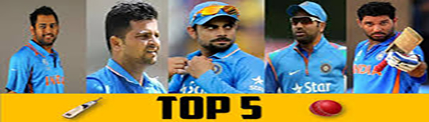

Rohit Gurunath Sharma (born 30 April 1987) is an Indian cricketer. He is a right-handed batsman and an occasional right-arm off break bowler who plays for Mumbai. Rohit Sharma oozes batting talent: malleable wrists, knack to find the gaps, and the extra half a second when he plays his shots.
Virat Kohli (born 5 November 1988) is an Indian international cricketer who currently captains the India national team, is a right-handed batsman.
His records in all formats of cricket show his abilities and skills in cricket. Due to his great performances in cricket he is selected as captain of test team of India.
Hardik Pandya swears by living life king size and that exuberance finds expression in his powerful hitting in the middle order and brisk seam bowling. .
Pandya's blitzkreig broke Virender Sehwag and Kapil Dev's records. On the back of Hardik Pandya's maiden Test century, India finished with 487 in their first innings.
Yuvraj Singh is an Indian international cricketer, who plays all forms of the game. An all-rounder who bats left-handed in the middle order.
He had been given vice captaincy of Indian Team during 2007-2008. He was the Man Of The Tournament in 2011 ICC Cricket World cup and India has won that tournament.
Suresh Kumar Raina ( born 27 November 1986) is an Indian professional cricketer. An aggressive left-handed middle-order batsman.
He has also served Indian Team as Captain and is the second youngest to do so for India. He holds record together with Rohit Sharma for being the only Indian batsman to score century in all three formats of International Cricket.